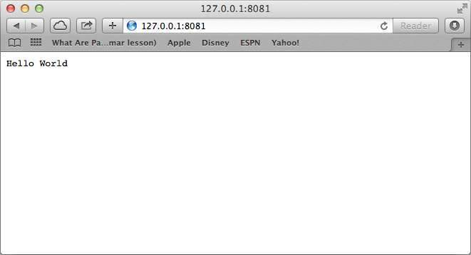
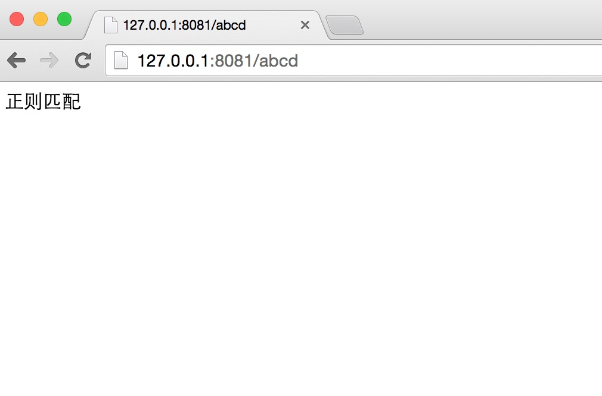
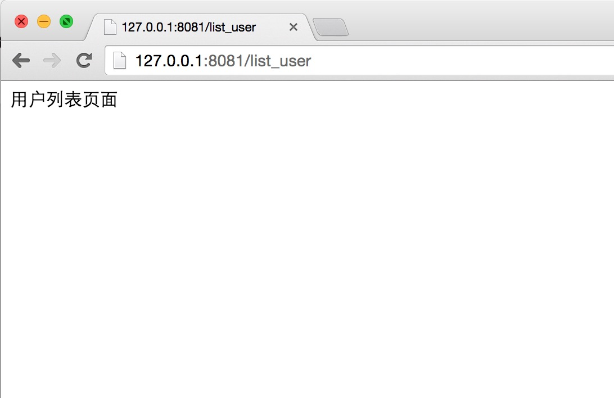
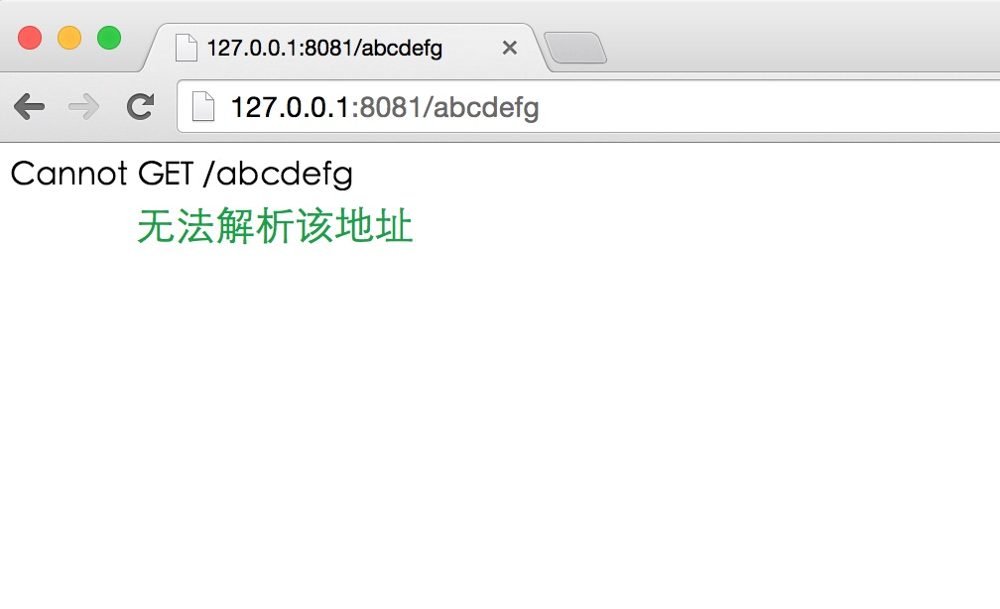
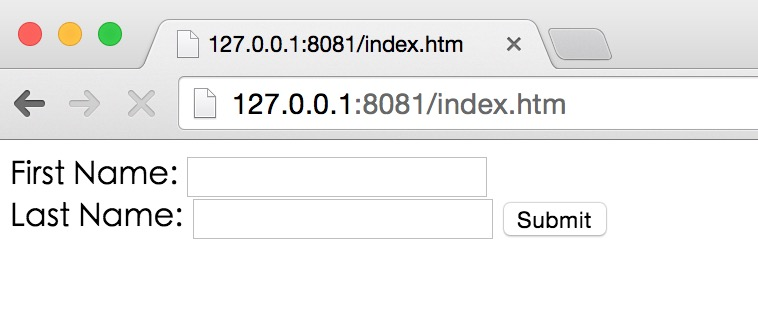
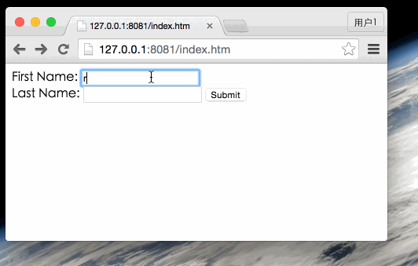
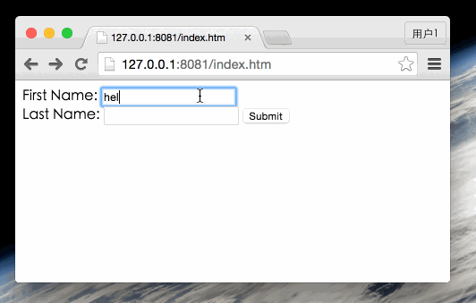
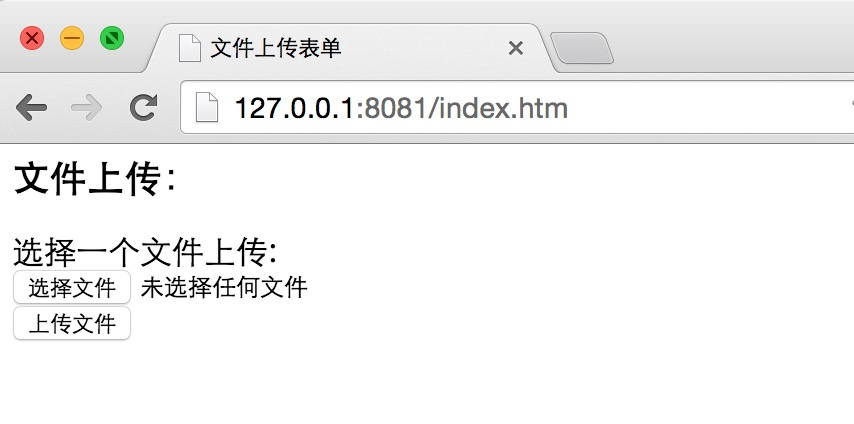
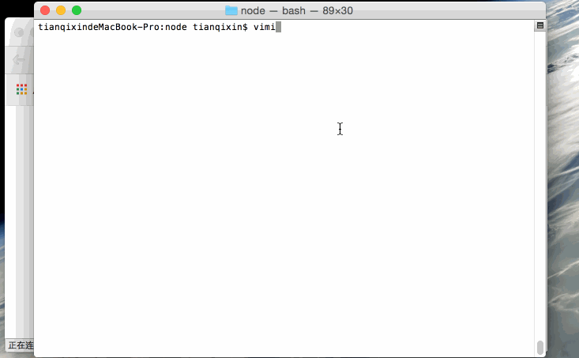
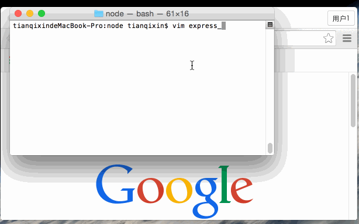

Node.js Express 框架
Express 简介
Express 是一个简洁而灵活的 node.js Web应用框架, 提供了一系列强大特性帮助你创建各种 Web 应用，和丰富的 HTTP 工具。
使用 Express 可以快速地搭建一个完整功能的网站。
Express 框架核心特性：
可以设置中间件来响应 HTTP 请求。
定义了路由表用于执行不同的 HTTP 请求动作。
可以通过向模板传递参数来动态渲染 HTML 页面。
安装 Express
安装 Express 并将其保存到依赖列表中：
$ npm install express --save
以上命令会将 Express 框架安装在当期目录的 node_modules 目录中， node_modules 目录下会自动创建 express 目录。以下几个重要的模块是需要与 express 框架一起安装的：
body-parser - node.js 中间件，用于处理 JSON, Raw, Text 和 URL 编码的数据。
cookie-parser - 这就是一个解析Cookie的工具。通过req.cookies可以取到传过来的cookie，并把它们转成对象。
multer - node.js 中间件，用于处理 enctype="multipart/form-data"（设置表单的MIME编码）的表单数据。
$ npm install body-parser --save $ npm install cookie-parser --save $ npm install multer --save
第一个 Express 框架实例
接下来我们使用 Express 框架来输出 "Hello World"。
以下实例中我们引入了 express 模块，并在客户端发起请求后，响应 "Hello World" 字符串。
创建 express_demo.js 文件，代码如下所示：
//express_demo.js 文件
var express = require('express');
var app = express();
app.get('/', function (req, res) {
res.send('Hello World');
})
var server = app.listen(8081, function () {
var host = server.address().address
var port = server.address().port
console.log("应用实例，访问地址为 http://%s:%s", host, port)
})
执行以上代码：
$ node express_demo.js 应用实例，访问地址为 http://0.0.0.0:8081
在浏览器中访问 http://127.0.0.1:8081，结果如下图所示：
请求和响应
Express 应用使用回调函数的参数： request 和 response 对象来处理请求和响应的数据。
app.get('/', function (req, res) {
// --
})
可以通过以下链接查看 request 和 response 对象的具体介绍：
Request 对象 - request 对象表示 HTTP 请求，包含了请求查询字符串，参数，内容，HTTP 头部等属性。常见属性有：
- req.app：当callback为外部文件时，用req.app访问express的实例
- req.baseUrl：获取路由当前安装的URL路径
- req.body / req.cookies：获得「请求主体」/ Cookies
- req.fresh / req.stale：判断请求是否还「新鲜」
- req.hostname / req.ip：获取主机名和IP地址
- req.originalUrl：获取原始请求URL
- req.params：获取路由的parameters
- req.path：获取请求路径
- req.protocol：获取协议类型
- req.query：获取URL的查询参数串
- req.route：获取当前匹配的路由
- req.subdomains：获取子域名
- req.accpets（）：检查请求的Accept头的请求类型
- req.acceptsCharsets / req.acceptsEncodings / req.acceptsLanguages
- req.get（）：获取指定的HTTP请求头
- req.is（）：判断请求头Content-Type的MIME类型
Response 对象 - response 对象表示 HTTP 响应，即在接收到请求时向客户端发送的 HTTP 响应数据。常见属性有：
- res.app：同req.app一样
- res.append（）：追加指定HTTP头
- res.set（）在res.append（）后将重置之前设置的头
- res.cookie（name，value [，option]）：设置Cookie
- opition: domain / expires / httpOnly / maxAge / path / secure / signed
- res.clearCookie（）：清除Cookie
- res.download（）：传送指定路径的文件
- res.get（）：返回指定的HTTP头
- res.json（）：传送JSON响应
- res.jsonp（）：传送JSONP响应
- res.location（）：只设置响应的Location HTTP头，不设置状态码或者close response
- res.redirect（）：设置响应的Location HTTP头，并且设置状态码302
- res.send（）：传送HTTP响应
- res.sendFile（path [，options] [，fn]）：传送指定路径的文件 -会自动根据文件extension设定Content-Type
- res.set（）：设置HTTP头，传入object可以一次设置多个头
- res.status（）：设置HTTP状态码
- res.type（）：设置Content-Type的MIME类型
路由
我们已经了解了 HTTP 请求的基本应用，而路由决定了由谁(指定脚本)去响应客户端请求。
在HTTP请求中，我们可以通过路由提取出请求的URL以及GET/POST参数。
接下来我们扩展 Hello World，添加一些功能来处理更多类型的 HTTP 请求。
创建 express_demo2.js 文件，代码如下所示：
var express = require('express');
var app = express();
// 主页输出 "Hello World"
app.get('/', function (req, res) {
console.log("主页 GET 请求");
res.send('Hello GET');
})
// POST 请求
app.post('/', function (req, res) {
console.log("主页 POST 请求");
res.send('Hello POST');
})
// /del_user 页面响应
app.delete('/del_user', function (req, res) {
console.log("/del_user 响应 DELETE 请求");
res.send('删除页面');
})
// /list_user 页面 GET 请求
app.get('/list_user', function (req, res) {
console.log("/list_user GET 请求");
res.send('用户列表页面');
})
// 对页面 abcd, abxcd, ab123cd, 等响应 GET 请求
app.get('/ab*cd', function(req, res) {
console.log("/ab*cd GET 请求");
res.send('正则匹配');
})
var server = app.listen(8081, function () {
var host = server.address().address
var port = server.address().port
console.log("应用实例，访问地址为 http://%s:%s", host, port)
})
执行以上代码：
$ node express_demo2.js 应用实例，访问地址为 http://0.0.0.0:8081
接下来你可以尝试访问 http://127.0.0.1:8081 不同的地址，查看效果。
在浏览器中访问 http://127.0.0.1:8081/list_user，结果如下图所示：
在浏览器中访问 http://127.0.0.1:8081/abcd，结果如下图所示：
在浏览器中访问 http://127.0.0.1:8081/abcdefg，结果如下图所示：
静态文件
Express 提供了内置的中间件 express.static 来设置静态文件如：图片， CSS, JavaScript 等。
你可以使用 express.static 中间件来设置静态文件路径。例如，如果你将图片， CSS, JavaScript 文件放在 public 目录下，你可以这么写：
app.use(express.static('public'));
我们可以到 public/images 目录下放些图片,如下所示：
node_modules server.js public/ public/images public/images/logo.png
让我们再修改下 "Hello Word" 应用添加处理静态文件的功能。
创建 express_demo3.js 文件，代码如下所示：
var express = require('express');
var app = express();
app.use(express.static('public'));
app.get('/', function (req, res) {
res.send('Hello World');
})
var server = app.listen(8081, function () {
var host = server.address().address
var port = server.address().port
console.log("应用实例，访问地址为 http://%s:%s", host, port)
})
执行以上代码：
$ node express_demo3.js 应用实例，访问地址为 http://0.0.0.0:8081
执行以上代码：
在浏览器中访问 http://127.0.0.1:8081/images/logo.png（本实例采用了手册网的logo），结果如下图所示：

GET 方法
以下实例演示了在表单中通过 GET 方法提交两个参数，我们可以使用 server.js 文件内的 process_get 路由器来处理输入：
index.htm 文件代码如下：
<html> <body> <form action="http://127.0.0.1:8081/process_get" method="GET"> First Name: <input type="text" name="first_name"> <br> Last Name: <input type="text" name="last_name"> <input type="submit" value="Submit"> </form> </body> </html>
server.js 文件代码如下:
var express = require('express');
var app = express();
app.use(express.static('public'));
app.get('/index.htm', function (req, res) {
res.sendFile( __dirname + "/" + "index.htm" );
})
app.get('/process_get', function (req, res) {
// 输出 JSON 格式
response = {
first_name:req.query.first_name,
last_name:req.query.last_name
};
console.log(response);
res.end(JSON.stringify(response));
})
var server = app.listen(8081, function () {
var host = server.address().address
var port = server.address().port
console.log("应用实例，访问地址为 http://%s:%s", host, port)
})
执行以上代码：
node server.js 应用实例，访问地址为 http://0.0.0.0:8081
浏览器访问 http://127.0.0.1:8081/index.htm，如图所示：
现在你可以向表单输入数据，并提交，如下演示：
POST 方法
以下实例演示了在表单中通过 POST 方法提交两个参数，我们可以使用 server.js 文件内的 process_get 路由器来处理输入：
index.htm 文件代码修改如下：
<html> <body> <form action="http://127.0.0.1:8081/process_post" method="POST"> First Name: <input type="text" name="first_name"> <br> Last Name: <input type="text" name="last_name"> <input type="submit" value="Submit"> </form> </body> </html>
server.js 文件代码修改如下:
var express = require('express');
var app = express();
var bodyParser = require('body-parser');
// 创建 application/x-www-form-urlencoded 编码解析
var urlencodedParser = bodyParser.urlencoded({ extended: false })
app.use(express.static('public'));
app.get('/index.htm', function (req, res) {
res.sendFile( __dirname + "/" + "index.htm" );
})
app.post('/process_post', urlencodedParser, function (req, res) {
// 输出 JSON 格式
response = {
first_name:req.body.first_name,
last_name:req.body.last_name
};
console.log(response);
res.end(JSON.stringify(response));
})
var server = app.listen(8081, function () {
var host = server.address().address
var port = server.address().port
console.log("应用实例，访问地址为 http://%s:%s", host, port)
})
执行以上代码：
$ node express_demo.js 应用实例，访问地址为 http://0.0.0.0:8081
浏览器访问 http://127.0.0.1:8081/index.htm，如图所示：
现在你可以向表单输入数据，并提交，如下演示：
文件上传
以下我们创建一个用于上传文件的表单，使用 POST 方法，表单 enctype 属性设置为 multipart/form-data。
index.htm 文件代码修改如下：
<html> <head> <title>文件上传表单</title> </head> <body> <h3>文件上传：</h3> 选择一个文件上传: <br /> <form action="/file_upload" method="post" enctype="multipart/form-data"> <input type="file" name="image" size="50" /> <br /> <input type="submit" value="上传文件" /> </form> </body> </html>
server.js 文件代码修改如下:
var express = require('express');
var app = express();
var fs = require("fs");
var bodyParser = require('body-parser');
var multer = require('multer');
app.use(express.static('public'));
app.use(bodyParser.urlencoded({ extended: false }));
app.use(multer({ dest: '/tmp/'}).array('image'));
app.get('/index.htm', function (req, res) {
res.sendFile( __dirname + "/" + "index.htm" );
})
app.post('/file_upload', function (req, res) {
console.log(req.files[0]); // 上传的文件信息
var des_file = __dirname + "/" + req.files[0].originalname;
fs.readFile( req.files[0].path, function (err, data) {
fs.writeFile(des_file, data, function (err) {
if( err ){
console.log( err );
}else{
response = {
message:'File uploaded successfully',
filename:req.files[0].originalname
};
}
console.log( response );
res.end( JSON.stringify( response ) );
});
});
})
var server = app.listen(8081, function () {
var host = server.address().address
var port = server.address().port
console.log("应用实例，访问地址为 http://%s:%s", host, port)
})
执行以上代码：
$ node express_demo.js 应用实例，访问地址为 http://0.0.0.0:8081
浏览器访问 http://127.0.0.1:8081/index.htm，如图所示：
现在你可以向表单输入数据，并提交，如下演示：
Cookie 管理
我们可以使用中间件向 Node.js 服务器发送 cookie 信息，以下代码输出了客户端发送的 cookie 信息：
// express_cookie.js 文件
var express = require('express')
var cookieParser = require('cookie-parser')
var app = express()
app.use(cookieParser())
app.get('/', function(req, res) {
console.log("Cookies: ", req.cookies)
})
app.listen(8081)
执行以上代码：
$ node express_demo.js
现在你可以访问 http://127.0.0.1:8081 并查看终端信息的输出，如下演示：
